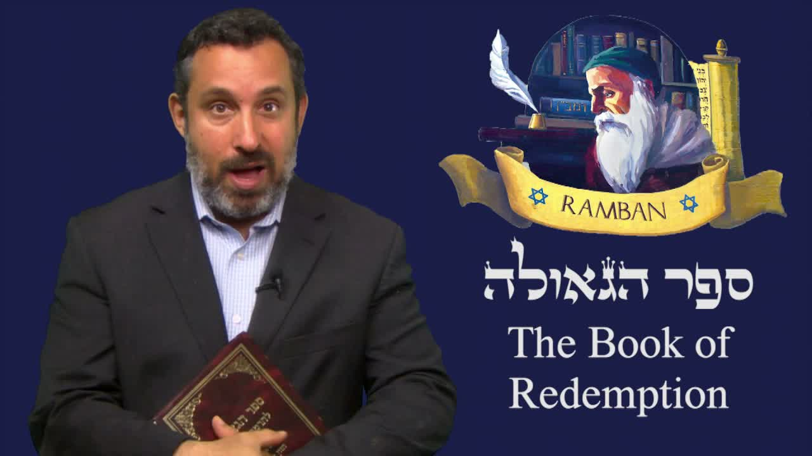

救贖之書 ── 拉姆班《Sefer HaGeulah》系列導論 The Book of Redemption — Introducing Ramban's Sefer HaGeulah
沙皮拉拉比宣布一個為期約一年的全新研習系列：我們將一起逐章研讀十三世紀偉大的拉比、聖經與塔木德註釋家拉姆班（Nachmanides）的經典之作《救贖之書》（Sefer HaGeulah）。為什麼是拉姆班？為什麼是這本書？因為他一生都在尋找彌賽亞、思想救贖——而我們此刻，正活在最需要重新理解「救贖」的時代。 Rabbi Shapira announces a year-long study series: a chapter-by-chapter journey through Sefer HaGeulah (“The Book of Redemption”), the classic work of the great thirteenth-century sage, biblical and Talmudic commentator Ramban (Nachmanides). Why Ramban? Why this book? Because he spent his life seeking the Mashiach and meditating on redemption — and we are living in the very hour that most needs to understand what redemption means.
「過去這幾年，神大大祝福我們，讓我們能持續投資在你的屬靈教育上。」拉比沙皮拉博士這樣開場——然後宣布一件他「按捺不住的興奮」之事：一個為期約一年的全新研習系列，要與我們一起逐章研讀拉姆班（Nachmanides）的《救贖之書》（סֵפֶר הַגְּאוּלָה Sefer HaGeulah）。為什麼是拉姆班？為什麼是這本書？因為——用拉比自己的話——「拉姆班幾乎用了一生的時間，從猶太人的角度尋找、等候彌賽亞，並寫下了這本珍貴的書。」這篇文章是這趟旅程的導論：它不是課程本身，而是通往課程的門。 “Over the last several years, we have been blessed to keep investing in your spiritual education.” So begins Rabbi Dr. Shapira — before announcing something he is, in his own words, “excited and thrilled” about: a year-long study series walking chapter by chapter through Ramban's (Nachmanides') Sefer HaGeulah (סֵפֶר הַגְּאוּלָה, “The Book of Redemption”). Why Ramban? Why this book? Because — in the rabbi's own words — “Ramban invested most of his life looking and seeking for the Mashiach from a Jewish perspective, and he wrote this precious book.” This article is the introduction to that journey: not the course itself, but the doorway into it.
一、誰是拉姆班（Nachmanides，1194–1270）？I. Who Was Ramban (Nachmanides, 1194–1270)?
拉姆班（רַמְבַּ"ן Ramban）這個名字其實是一個縮寫——Rabbeinu Moshe ben Nachman（「我們的拉比、納賀曼之子摩西」）首字母的組合。在西方文獻中，他更常被稱作拉丁化的名字 Nachmanides（納賀曼尼德斯）。他生於 1194 年的西班牙赫羅納（Girona），卒於 1270 年的以色列地——是中世紀猶太世界最具份量的人物之一。 Ramban (רַמְבַּ"ן) is in fact an acronym — formed from the initials of Rabbeinu Moshe ben Nachman (“our rabbi, Moses son of Nachman”). In Western literature he is better known by his Latinized name, Nachmanides. Born in 1194 in Girona, Spain, and dying around 1270 in the Land of Israel, he was one of the towering figures of the medieval Jewish world.
他同時是聖經註釋家、塔木德學者、哲學家、卡巴拉神祕家、醫生，也是一位公開為信仰辯護的鬥士。他對《妥拉》（Torah，摩西五經）的註釋至今仍是猶太傳統研讀的基石；1263 年他在巴塞隆納（Barcelona）的公開辯論中代表猶太社群應對基督教神學家的挑戰，這場辯論成為猶太—基督教思想史上的著名事件。他晚年因受迫害離開西班牙，上行到以色列地，在耶路撒冷與阿卡（Acre）重建猶太群體的學習生活。 He was at once a biblical commentator, Talmudist, philosopher, kabbalist, physician, and a public defender of the faith. His commentary on the Torah (the Five Books of Moses) remains a cornerstone of traditional Jewish study to this day. In 1263 he represented the Jewish community at the famous Disputation of Barcelona against Christian theologians — a landmark in the history of Jewish–Christian thought. Late in life, driven out of Spain by persecution, he made aliyah to the Land of Israel, rebuilding Jewish learning in Jerusalem and Acre.
這一點對我們這趟旅程至關重要：拉姆班不是一位坐在書齋裡空談末世的學者。他親身經歷了流亡（גָּלוּת galut），親眼見過被毀的耶路撒冷，親手在廢墟中重建敬拜——因此當他寫「救贖」時，他寫的是一個流亡之民的真實盼望，不是抽象的理論。 This matters enormously for our journey: Ramban was not a scholar theorizing about the end-times from the safety of a study. He had lived through exile (גָּלוּת galut), seen Jerusalem in ruins, and rebuilt worship with his own hands amid that ruin. So when he writes of “redemption,” he writes the concrete hope of an exiled people — not abstract theory.
二、《Sefer HaGeulah》是什麼書？II. What Is Sefer HaGeulah?
《救贖之書》（סֵפֶר הַגְּאוּלָה Sefer HaGeulah）是拉姆班專門探討救贖（גְּאוּלָה geulah）與彌賽亞（מָשִׁיחַ Mashiach）來臨的一部著作。它寫於猶太人飽受迫害、彌賽亞盼望被反覆質疑的時代，目的是要堅固一個流亡之民的信心：神對以色列所立的救贖之約，必然應驗。 Sefer HaGeulah (סֵפֶר הַגְּאוּלָה, “The Book of Redemption”) is Ramban's dedicated treatment of redemption (גְּאוּלָה geulah) and the coming of the Messiah (מָשִׁיחַ Mashiach). It was written in an age of persecution, when the messianic hope was being relentlessly questioned, and its purpose was to strengthen the faith of an exiled people: that God's covenant of redemption with Israel will be fulfilled.
在這本書裡，拉姆班逐節梳理但以理書、以賽亞書等先知書中關於末世的經文，回應當時種種否認彌賽亞盼望的論點，並嘗試說明：救贖不是被無限期推遲的幻夢，而是寫在神話語裡的確定承諾。對華人讀者而言，理解這一點很重要：在猶太傳統裡，「救贖」首先指的是整個民族與整個世界的真實、歷史性的恢復——以色列從流亡歸回、聖殿與敬拜的重建、列國歸向獨一真神、死人復活、彌賽亞的國度降臨。它既是個人的，更是公共的、國度性的。 In this book Ramban works verse by verse through the end-time passages of the prophets — Daniel, Isaiah and others — answering the arguments of his day that denied the messianic hope, and showing that redemption is not a dream endlessly deferred but a fixed promise written into God's word. For Chinese readers this is worth grasping: in Jewish tradition, “redemption” means first of all the real, historical restoration of an entire people and an entire world — Israel returning from exile, the rebuilding of Temple and worship, the nations turning to the one true God, the resurrection of the dead, the coming of the Messiah's kingdom. It is personal, yes — but even more, it is public and national.
「拉姆班幾乎用了一生的時間，從猶太人的角度尋找、等候彌賽亞，並寫下了這本珍貴的書。」——拉比沙皮拉 “Ramban invested most of his life looking and seeking for the Mashiach from a Jewish perspective, and he wrote this precious book.”— Rabbi Shapira
三、為什麼此刻要研讀「救贖」？III. Why Study Redemption Now?
拉比沙皮拉解釋這個系列的緣起時說：Ahavat Ammi 事工這些年帶來了《妥拉珍珠》（Pearls of Torah）、希伯來文教學、神學課程、末世論教導等等。「但我們作為一個機構，渴望把這份教導再帶深一層。」研讀《救贖之書》，正是這「再深一層」的具體實踐。 Rabbi Shapira explains the impulse behind the series: over the years Ahavat Ammi has offered Pearls of Torah, Hebrew instruction, theology courses, end-times teaching, and much more. “But as an organization, we longed to take this teaching a step deeper.” Studying Sefer HaGeulah is exactly what that “step deeper” looks like in practice.
為什麼是現在？因為我們正活在一個「救贖」一詞被廉價化、卻又無比迫切的時代。一方面，許多基督教末世論把救贖簡化成「逃離地球」或「等待被提」；另一方面，世界局勢——以色列、中東、列國的動盪——又讓「彌賽亞何時來、救贖如何臨到」這些古老問題，重新變得真實而尖銳。拉姆班從流亡的深處所寫下的盼望，恰恰是我們這個世代需要重新聆聽的。 Why now? Because we live in an age when the word “redemption” has been cheapened and yet has never been more urgent. On one hand, much Christian eschatology has reduced redemption to “escaping the earth” or “waiting for the Rapture.” On the other, world events — Israel, the Middle East, the turmoil of the nations — make the ancient questions (when does the Mashiach come? how does redemption arrive?) suddenly real and sharp again. The hope Ramban wrote from the depths of exile is precisely what our generation needs to hear afresh.
還有一個更深的理由：拉比沙皮拉要帶我們看的，是猶太人怎樣看待救贖（Geulah）與彌賽亞的來臨——而這個視角，與許多華人基督徒所熟悉的西方版本，有顯著的不同。基督教神學常透過十字架與復活的鏡頭理解救恩；猶太視角則強調一個全面的、民族性的、有形的恢復，深深紮根於與神所立的約與妥拉。理解這份差異，不是要製造對立，而是要讓我們更完整地認識那位「救恩是從猶太人出來的」（約 4:22）的神。 There is a deeper reason still: Rabbi Shapira wants to show us how Jewish people see redemption (geulah) and the coming of the Messiah — and that vantage point differs markedly from the Western version familiar to many Chinese Christians. Christian theology often understands salvation through the lens of the Cross and Resurrection; the Jewish perspective stresses a comprehensive, national, physical restoration, rooted deeply in the covenant and the Torah. Grasping this difference is not about creating opposition — it is about knowing more fully the God of whom it is said, “salvation is of the Jews” (John 4:22).
四、這一年的旅程將涵蓋什麼？IV. What the Year-Long Journey Will Cover
拉比沙皮拉清楚地說明了這個系列的雙重結構：我們不只讀拉姆班的原文，更要透過拉比自己對《Sefer HaGeulah》的註解來讀它。換句話說，這是一場多層次的學習——一部十三世紀的經典，加上一位當代彌賽亞猶太拉比的逐章引導。 Rabbi Shapira makes the twofold structure of the series clear: we will not only read Ramban's own text, but read it through the rabbi's own commentary on Sefer HaGeulah. In other words, this is a multi-layered study — a thirteenth-century classic, guided chapter by chapter by a contemporary Messianic Jewish rabbi.
在這趟約一年的旅程中，我們預計會一同探討： Across this roughly year-long journey, we expect to explore together:
• 末世的預言——但以理書、以賽亞書等先知書中關於末後日子的經文，以及拉姆班如何解讀它們。
• 「救贖」（Geulah）的真義——它為何不是單一事件，而是神恢復以色列與全世界的整個過程。
• 彌賽亞（Mashiach）的來臨——猶太傳統如何理解祂的身分、使命與國度。
• 流亡（Galut）與歸回——拉姆班親身經歷的流亡，如何塑造了他對盼望的書寫。
• 給愛以色列的基督徒的功課——這份古老的猶太盼望，如何照亮、修正、並加深我們對福音的理解。 • End-time prophecy — the passages of Daniel, Isaiah and the prophets concerning the last days, and how Ramban reads them.
• The true meaning of geulah (redemption) — why it is not a single event but the whole process of God restoring Israel and the world.
• The coming of the Mashiach (Messiah) — how Jewish tradition understands His identity, mission, and kingdom.
• Exile (galut) and return — how the exile Ramban personally endured shaped the way he wrote of hope.
• Lessons for Christians who love Israel — how this ancient Jewish hope can illuminate, correct, and deepen our understanding of the Gospel.
需要說明的是：導論本身不是課程。拉比沙皮拉在這段兩分鐘的宣告裡並沒有引用任何具體經文，也沒有展開任何論證——他在邀請我們報名上路。深入的釋經、逐節的查考、神學的辯論，都將在接下來一整年的課程裡逐步展開。這篇導論的作用，是讓我們明白為什麼這趟旅程值得走。 A word of clarity: the introduction is not the course. In this two-minute announcement Rabbi Shapira cites no specific verses and develops no argument — he is inviting us to enrol and set out. The deep exegesis, the verse-by-verse study, the theological debate will all unfold gradually across the full year ahead. The job of this introduction is simply to help us see why the journey is worth taking.
五、邀請 ── 與我們一同上路V. The Invitation — Set Out with Us
拉比沙皮拉以最溫暖、最個人的語氣發出邀請：「我邀請你與我一同學習末世的預言，了解猶太人如何透過拉姆班、透過我對《Sefer HaGeulah》的註解，以一個非常獨特的角度看待救贖（Geulah）與彌賽亞的來臨。」這不是一場講座，而是一段同行——「我們等不及要開始這個系列了。」 Rabbi Shapira issues the invitation in his warmest, most personal tone: “I invite you to join me to study end-time prophecies, understanding the way Jewish people look at the geulah, the coming of the Messiah, in a very unique way — through Ramban, through my own commentary on the Sefer HaGeulah.” This is not a lecture but a walking together — “We can't wait to start this series.”
對華人基督徒來說，這份邀請有特別的份量。我們大多是透過翻譯自西方的神學教材認識末世與救恩的；很少有機會直接坐在一位彌賽亞猶太拉比腳前，聽他從希伯來根源、從一部猶太經典出發，重新講述「救贖」的故事。這個系列給我們的，正是這樣一個從觀察者變成學生的機會——藉著更深的認識，去更深地愛這位獨一的神，以及祂所揀選的百姓。 For Chinese Christians this invitation carries special weight. Most of us came to know eschatology and salvation through theology translated from the West; rarely do we get to sit directly at the feet of a Messianic Jewish rabbi and hear the story of “redemption” retold from its Hebrew roots, out of a Jewish classic. What this series offers is exactly that — the chance to move from observer to student, and through deeper knowledge to love more deeply the one true God and the people He has chosen.
拉比也誠懇地邀請我們以行動支持這份事工：如果你從這教導中得著祝福，請為 Ahavat Ammi 點讚、奉獻、並在禱告中托住這份工作。但首要的邀請，始終是那一句——來，與我們一同學習。 The rabbi also sincerely invites us to support the work: if you are blessed by this teaching, like the Ahavat Ammi page, give, and uphold the ministry in prayer. But the first invitation is always the same one — come, and study with us.
六、給華人讀者的一點分辨VI. A Word of Discernment for Chinese Readers
最後，一點誠實的提醒。這篇文章是一個系列的導論，而拉姆班是一位猶太聖賢——他對彌賽亞身分的理解，與承認耶書亞（Yeshua）就是那位彌賽亞的信仰，在許多關鍵點上並不相同。研讀《Sefer HaGeulah》，不是要我們照單全收拉姆班的每一個結論，而是要我們學會他怎樣讀經、怎樣盼望、怎樣在流亡中持守對神信實的確信。 Finally, an honest note. This article is the introduction to a series, and Ramban was a Jewish sage — his understanding of the Messiah's identity does not, at key points, coincide with the faith that confesses Yeshua as that Messiah. Studying Sefer HaGeulah is not a call to accept every one of Ramban's conclusions, but to learn how he reads Scripture, how he hopes, and how he holds fast to God's faithfulness in the midst of exile.
這正是拉比沙皮拉雙層教學的價值所在：他作為一位相信耶書亞的彌賽亞猶太拉比，會帶著我們分辨——哪裡與福音相通、哪裡需要在彌賽亞的光中重新理解。帶著這份分辨同行，這趟旅程就會是一份禮物：它會讓我們對「救贖」的認識，既更猶太，也更完整。 This is exactly the value of Rabbi Shapira's two-layer teaching: as a Messianic Jewish rabbi who believes in Yeshua, he will guide us in discernment — where it harmonizes with the Gospel, and where it must be re-read in the light of the Messiah. Walked with that discernment, this journey becomes a gift: it makes our understanding of “redemption” at once more Jewish and more complete.
七、結語 ── 救贖之書，敞開的門VII. Closing — The Book of Redemption, an Open Door
「我邀請你與我一同學習——以一個非常獨特的角度，看見猶太人如何盼望救贖（Geulah）與彌賽亞（Mashiach）的來臨。我們等不及要開始了。神祝福你，L'hitraot（後會有期）。」 “I invite you to join me — to see, in a very unique way, how the Jewish people hope for the geulah and the coming of the Mashiach. We can't wait to start. God bless you, L'hitraot — until we meet again.”